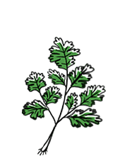

fresh coriander
Coriander, also known as Coriandrum sativum} or cilantro, is an herb cultivated for its leaves and seeds (all parts are edible). Coriander has a tart, lemon/lime taste. Coriander leaves are a source of vitamin A, vitamin C. Its seeds have a lower count of vitamins but still provide some amounts of calcium and iron. For 3-21 percent of people, Coriander tastes soapy or rotten. These people have a gene which detects specific compounds in the plant, the most common is OR6A2, a gene involved in sensing smells.